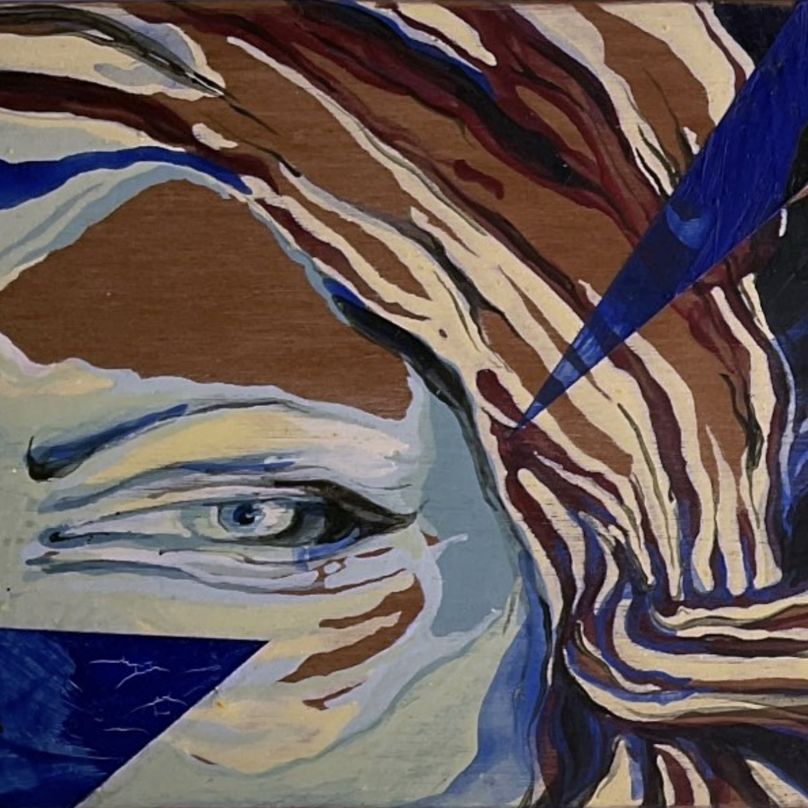

Our new single, out now.
We wrote Sunday Girl for the opening of an all-female annual art exhibition in 2023, with the same name. The exhibition was founded and curated by Leela Bhai (Auckland, NZ).
At the time, I had arranged to sing in Acapollinations as a duo set with Tui Mamaki, who would travel to Auckland to perform with me there. However, over those pandemic years, we had become accustomed to our performing life being frayed by constant disruption and uncertainty, so I knew I needed a back-up option for the opening performance should we not be able to perform together. Thus, Sunday Girl was written as an alternate performance song to open the exhibition.
In the writing process it was easy to be inspired and feel empowered to support and be a part of a female movement in art. For just this opportunity, and the simple provocation this provided me, I will always feel indebted to Leela Bhai, and her vision and commitment to art, creativity and supporting female artists (in all modalities).
I’m honoured that Leela also graciously allowed me to use her work as the cover art for this song, as well as the art featured below.
This song is a dedication of love in honouring, supporting and empowering female creatives in the arts.
I invite you to download a copy for your own.
~ Sally Jamila
Music and lyrics by Sally Jamila and Jamie Gabriel
Rap lyric collaboration with Robert Mignault
Produced by SAJA Project